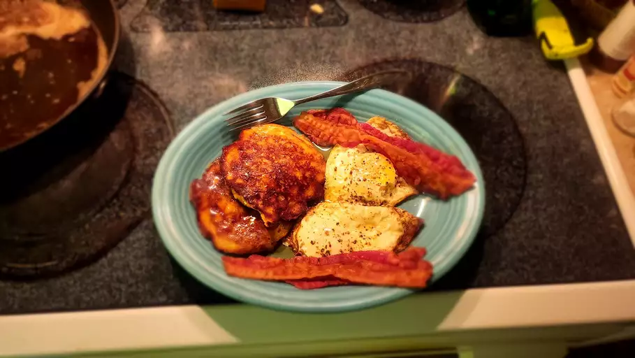

Apple Fritter Pancakes

Ingredients
- 1 large egg
- 1 tablespoon white sugar
- ⅛ teaspoon ground cinnamon, or to taste
- 1 pinch ground ginger
- ¼ teaspoon kosher salt
- ⅛ teaspoon pure vanilla extract
- 1 cup shredded apple
- 1 teaspoon lemon juice
- ½ cup all-purpose flour, or as needed
- ¼ teaspoon baking powder
- ⅛ teaspoon baking soda
- 2 tablespoons melted butter
Directions (step-by-step)
- Combine egg, sugar, cinnamon, ginger, nutmeg, kosher salt, and vanilla extract in a bowl. Whisk until well combined and lightly foamy. Add shredded apple and lemon juice and fold in with a spatula until well combined. Add flour, baking powder, and baking soda. Mix until flour disappears and batter is thick yet spoonable.
- Melt butter in a skillet over medium heat. Add tablespoonfuls of apple batter to the hot butter and cook until browned, about 3 minutes. Turn and cook until apple pancakes spring back to the touch and are browned on the other side, an additional 3 minutes.
Return to the top
Return home